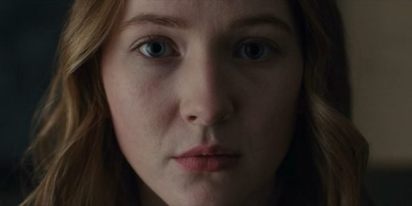

SINCRONITZACIÓ DE FAMÍLIES AMB EL PASSAT, PRESENT I FUTUR (1953-1986-2019)
FAMÍLIA KAHNWALD
– Inés Kahnwald (1953-1986-2019)
Ella es una enfermera soltera que atiende a Mikkel Nielsen y lo adopta. El niño viajó de 2019 a 1986.
– Michael Kahnwald (1986 – 2019)
La trama de Dark empieza con la desaparición de Mikkel Nielsen quien viajó de 2019 a 1986 y al ser adoptado por Inés, cambió de nombre a Michael.
– Hanna Kahnwald (1986 – 2019)
Desde pequeña, ella estuvo enamorada de Ulrich Nielsen, pero con el paso de los años, terminó casándose con Mikkel y tienen un hijo llamado Jonas.
– Jonas Kahnwald (2019)
Jonas es el único que toma el reto de acabar con el agujero gusano y viaja al pasado y al futuro. Otro de los detalles de este personaje es que está enamorado de Martha Nielson que es la hermana de su papá, lo que la convierte en su tía.
FAMÍLIA NIELSEN
– Agnes Nielsen (1953)
Ella es la matriarca de los Nielsen, llegó a la ciudad junto a su hijo Tronte en 1953. La única aparición que tuvo durante la serie fue en su encuentro con Ulrich Nielsen, quien es su nieto.
– Troten Nielsen (1953 – 1986 – 2019)
Es el hijo de Agnes. Tuvo una aventura con Claudia Tiendemann y tuvo poco interés cuando secuestraron a su hijo Mads. En 2019 lo encuentra en el bunker gracias a que le dijo Peter Dopler, justo ahí se volvieron a encontrar Claudia y Tronte, pero ella ya era muy diferente.
– Jana Nielsen (1953 – 1986 – 2019)
Apareció en 1953 mientras visitaba al relojero Tannhaus. Su historia se desarrolla totalmente en 1986, ella es la madre de Ulrich y vive una pesadilla al momento en que desapareció su hijo y la busca hasta el cansancio. En 2019, solo está en casa pensando en su pequeño desaparecido.
– Ulrich Nielsen (1986 – 2019)
Este personaje pasa por los tres periodos de Dark. Él vivió su niñez durante 1986, para el 2019 es un oficial de la policía, pero con la desaparición de su hijo Mikkel es que viaja a 1953 para descubrir que es lo que sucedió. Está casado con Katharina y tiene una aventura con Hannah.
– Katharina Nielse (1986 – 2019)
Fue la rebelde de la escuela y ahora es la directora de la misma escuela donde estudio. Tiene sospechas que su esposo (Ulrich) tiene una aventura, pero se encuentra centrada en buscar a su hijo Mikkel que desapareció y terminó viajando a 1986.
– Magnus Nielsen (2019)
Es hijo de Ulrich y Katharina, hermano de Mikkel, amigo de Jonas y también es su tío.
– Martha Nielsen (2019)
Hija de Ulrich y Katharina, hermana del desaparecido Mikkel. Tiene una relación con Bartosz Tiedemann pero ama a Jonas que es su tío, aunque ella no sabe que es su tío.
– Mikkel Nielsen o Michael Kahnwald (2019 – 1986 )
Con él empezó la serie y fue el pequeño Mikkel Nielsen quien viajó del 2019 a 1986 para crecer cambiar de nombre de Mikkel a Michael.
FAMÍLIA TIEDEMANN
– Egon Tiedemann
En los 50 está casado con Doris Tiedemann con quien tiene una hija: Claudia. En esa época investiga la repentina aparición de dos niños muertos en lo que será una planta nuclear. De la misma forma desaparece otro niño: Helge Doppler. Ya en los 80 investiga la desaparición de Madds Nielsen.
– Doris Tiedemann (1953)
Es esposa de Egon, pero en 1953 las cosas cambian, ya que conoce a Agnes Nielsen quien llega al pueblo con su hijo Trote. Luego las mujeres comienzan a sentirse atraídas y al parecer viven una historia de amor.
– Claudia Tiedemann (1953 – 1986 – 2019)
Es una niña muy estudiosa que poco a poco comienza a descubrir que se puede viajar en el tiempo, así que lo hace para saber qué es lo que está sucediendo y como puede acabar con el agujero gusano.

– Regina Tiedemann (1986 -2019)
Hija de Claudia. En su adolescencia no es precisamente muy querida por su madre quien siempre la criticaba. Durante la época escolar sufrió debullying, pero ella siempre fue protegida por un joven misterioso que responde al nombre de Aleksander. Cuando son adultos, estos personajes se casan y tienen un hijo llamado Bartosz. Administra un hotel pero es diagnosticada con cáncer.
– Aleksander Tiedemann (anteriormente Aleksander Köhler, originalmente Boris Niewald) (1986 – 2019)
En los ochenta llega herido a Winden, esconde unos pasaportes falsos pero son descubiertos por la pequeña Hannah. Le pide empleo a su futura suegra Claudia Tiedemann en la planta nuclear a lo que ella accede. Ya de adulto es el jefe de la planta, esconde botes con material radioactivo en la cueva y es chantajeado por Hannah quien le muestra sus pasaportes.
– Bartosz Tiendemann (2019)
Él es el mejor amigo de Jonas y tuvo una relación amorosa con Martha. En 2019 conoce al misterioso Noah y se va junto a él, pero en esta nueva entrega esperamos saber lo que realmente sucede con él.
FAMILIA DOPPLER
– Bernd Doppler (1953 – 1986)
Este personaje fue el encargado de crear la planta nuclear de Winden, se casa con Greta Doppler y tuvieron un hijo llama Helge Doppler. En la década de los 80 le deja la planta a Claudia y le dice: “Lo que sabemos es una gota, lo que ignoramos en un océano”.
– Greta Doppler (1953)
No se sabe mucho de este personaje, pero es la madre de Helge Doppler y es muy estricta. Además, se convierte en una ferviente religiosa y ve en Noah un gran ejemplo a seguir.
– Helge Doppler (1953 -1986 – 2019)
Fue un niño muy solitario y fue atacado por Ulrich que viajó a 1953 en busca de su hijo. En 1986 trabajaba como guardia en la plaza nuclear (que era donde su papá era el director general). En 2019 está en un asilo y se cree que tiene demencia. Viajó a 1986 para detenerse a sí mismo pero terminó hiriendo a su versión de los ochenta.
– Peter Doppler (2019)
Hijo de Helge, se desconoce quién es su madre. Aunque está casado con Charlotte y tiene dos hijas, se presume tuvo una aventura con la prostituta transexual Benni. Él junto con Tronte descubre el cuerpo de Madds y por lo tanto, que el viaje en el tiempo es posible.
– Charlotte Doppler (1986 – 2019)
De adolescente se obsesionó con el estudio de los pájaros muertos que aparecían en Winden. Posteriormente en 2019 ella es jefa de policía y vuelve a darse cuenta que el ciclo de la muerte de los animales y los niños desaparecidos ha regresado. Al final descubrió que su compañero Ulrich está atrapado en 1953.
– Franziska Doppler (2019)
Hija de Charlotte y Peter. Vende marihuana y sostiene una relación con Magnus Nielsen.
– Elisabeth Doppler (2019)
Hija de Charlotte y Peter. Es sordomuda, aunque su hermana Franziska una vez le dijo que ‘yo no te creo tu jueguito’. Desapareció por unas horas y cuando regresó a casa les dijo a sus papás que un hombre (Noah) le había entregado un reloj.